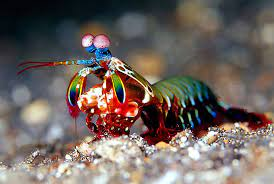

Facts about the Stomatopoda
General Information about the Stomatopoda (Odontodactylus scyllarus)
Eyes are testaments to evolution’s creativity. They all do the same basic things—detect light, and convert it into electrical signals—but in such a wondrous variety of ways. There are single and compound eyes, bifocal lenses and rocky ones, mirrors and optic fibres. And there are eyes that are so alien, so constantly surprising, that after decades of research, scientists have only just about figured out how they work, let alone why they evolved that way. To find them, you need to go for a swim.
Interesting facts
Most people have three types of light-detecting cells, or photoreceptors, which are sensitive to red, green and blue light. But the mantis shrimp has anywhere from 12 to 16 different photoreceptors in its midband.